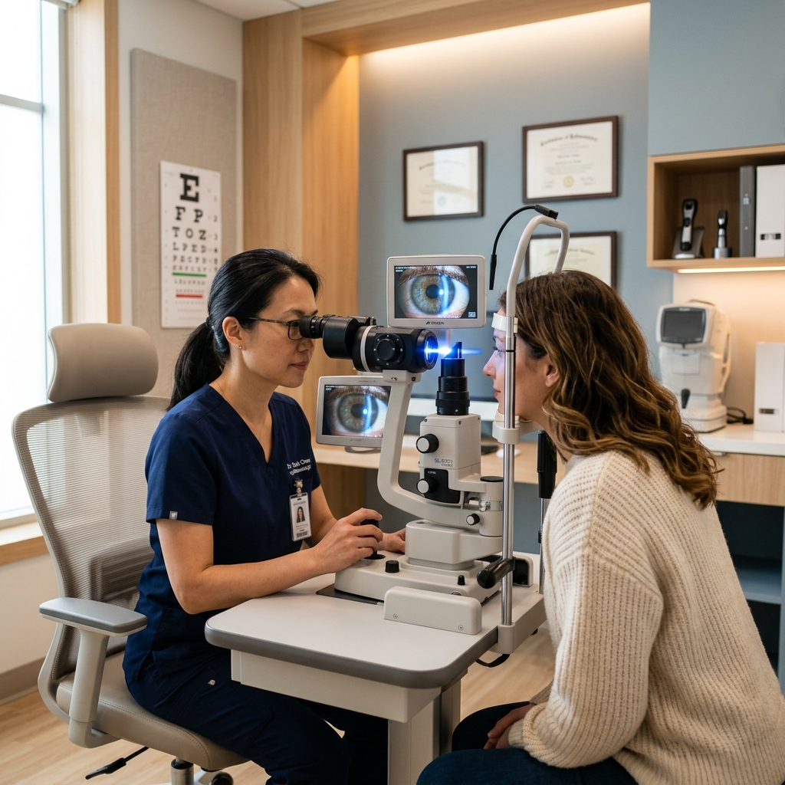
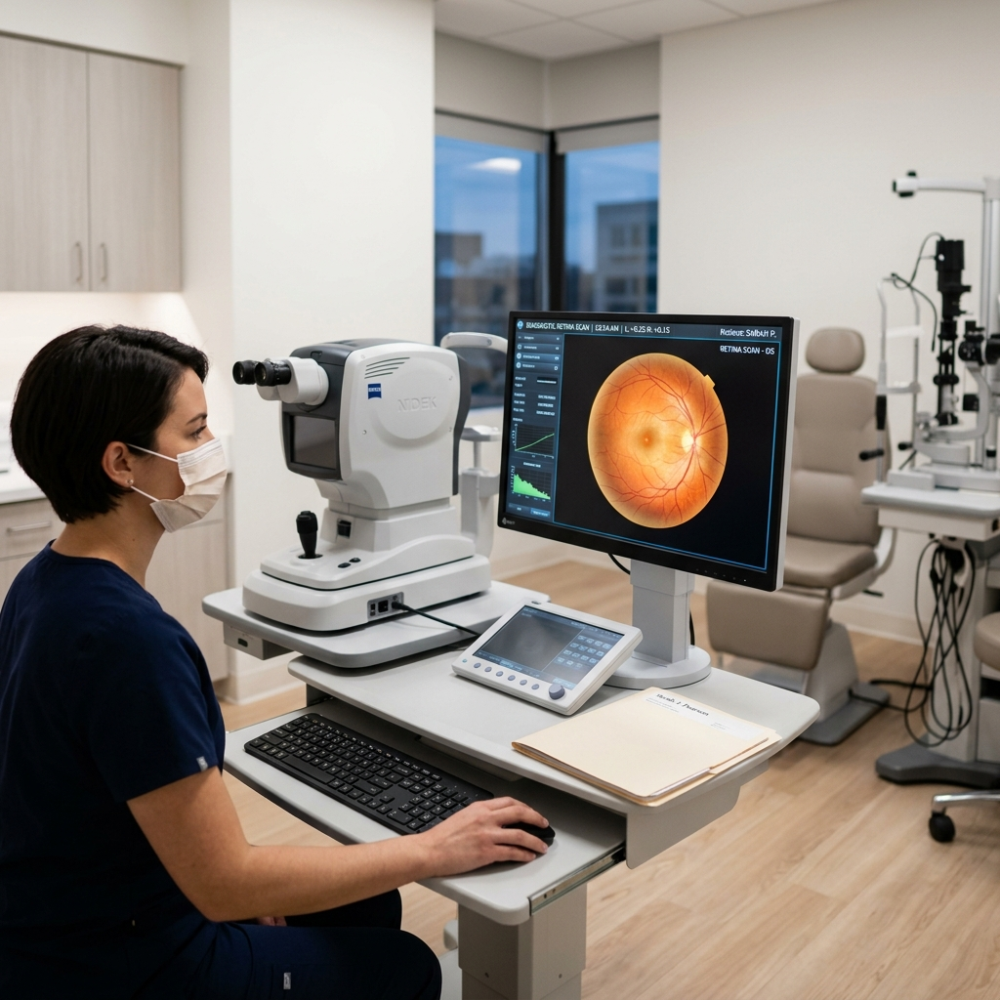

Supreme Excellence
Department of Ophthalmology
Your vision for a brighter future. Exceptional care for your precious gift of sight by highly skilled experts.
Your Vision for a Brighter Future
Protecting your precious gift of sight is paramount. At Supreme Ophthalmology, our highly skilled and experienced Eye Specialist is dedicated to providing exceptional care for all your eye health needs. We understand the importance of clear vision for maintaining a high quality of life, and we are committed to helping you achieve and maintain optimal visual health at every stage of life.
We offer a comprehensive range of services, utilizing cutting-edge technology and personalized treatment plans to address a wide variety of eye conditions. Whether you require routine eye exams, treatment for a specific eye disease, or vision correction solutions, our team is here to guide you on your journey to optimal vision.

Complete Care Spectrum
Types of Ophthalmology Care at Supreme Ophthalmology
Our Eye Specialist provide a full spectrum of ophthalmic care, including:
Comprehensive Eye Exams
We recommend regular eye exams for everyone, regardless of age or perceived vision problems. These exams allow us to assess your overall eye health, detect potential issues early on, and ensure your vision stays sharp.
Vision Correction
We offer a variety of vision correction options to suit your individual needs and preferences. This may include eyeglasses, contact lenses, or even refractive surgery procedures such as LASIK.
Medical Ophthalmology
Our specialists diagnose and treat a wide range of eye diseases, including cataracts, glaucoma, diabetic retinopathy, macular degeneration, and dry eye syndrome.
Pediatric Ophthalmology
We provide specialized care for children's eye health, addressing conditions like amblyopia (lazy eye) and strabismus (crossed eyes).
Oculoplastic Surgery
Our ophthalmologists perform a range of reconstructive and cosmetic procedures around the eyes, addressing concerns like droopy eyelids, ptosis, and eyelid tumors.
Your Vision is Our Priority
Schedule an appointment with Supreme Ophthalmology today and experience the difference of exceptional eye care. We look forward to helping you see the world clearly!

At Supreme Ophthalmology, we believe everyone deserves access to exceptional eye care. Our team is dedicated to providing you with a personalized approach, taking the time to understand your concerns and goals for your vision.
We will work collaboratively with you to develop a treatment plan that addresses your specific needs and preferences.
Vision Experts
Our Consultants
Dr.(Maj) G. Premnath
MBBS
MS(Ophthalmology) Clinical Fellowship in Glaucoma
Vision Guidance
Frequently Asked Questions
It is recommended to have an eye exam once every 1–2 years, depending on your age, vision needs, and medical history. Children, seniors, and individuals with conditions like diabetes may need more frequent checkups to monitor vision changes and detect eye diseases early.
Common signs include blurry vision, eye pain, redness, light sensitivity, floaters, and sudden vision changes. Persistent headaches or difficulty focusing can also indicate underlying issues. If you experience any of these symptoms, consult an ophthalmologist promptly for a thorough evaluation.
Eye exercises may help reduce eye strain and improve focus, especially for digital eye fatigue or certain muscle imbalances. However, they cannot correct refractive errors like nearsightedness or farsightedness. For long-term vision improvement, corrective lenses or medical treatment may be needed.
Regular eye exams are key to early detection. Maintaining healthy blood pressure, managing diabetes, avoiding smoking, and exercising regularly can reduce glaucoma risk. Protect your eyes from injury and follow your doctor's advice if you have a family history of glaucoma.